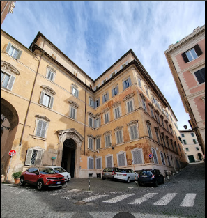

Roma - Esplosione nel cuore della città: il dramma del Palazzo del Grillo Roma, 24 Maggio 2023 - Un'esplosione ha scosso le fondamenta del centro storico ieri mattina, quando il noto Palazzo del Grillo è stato distrutto in un evento catastrofico che ha lasciato la città in lutto. Le cause dell'esplosione non sono ancora state determinate e gli investigatori stanno lavorando senza sosta per scoprire l'origine di questa tragedia. Purtroppo, si teme che la maggior parte degli abitanti del palazzo sia perita nell'esplosione. I soccorritori hanno lavorato tra le macerie per ore, sperando di trovare sopravvissuti. In una svolta inaspettata, una donna è stata trovata viva tra le rovine. In stato confusionale, si è presentata come Elettra di Diomede, residente ad ora nel palazzo. Tuttavia, le prime analisi hanno sollevato dubbi sulla sua identità, poiché l'aspetto fisico non corrisponde a quello che ci si aspetterebbe. Le autorità stanno conducendo indagini approfondite per verificare la sua identità e comprendere se possa avere un collegamento con l'incidente. Nel frattempo, la comunità si stringe nel ricordo di coloro che hanno perso la vita in questa tragedia e attende risposte che possano portare a una chiusura di questo doloroso capitolo. I funerali, avverranno tra due giorni con rito civile al coimitero acattolico.
